Reword
Type it fast. Send it right.
Reword is an Android app that turns quick, messy messages into clear ones. Type or use voice to text like you always do, tap above the message box, and tap Replace.
- Type your message in your texting, chat or email app.
- Tap ✎ Reword and pick a style and reading level.
- Check the rewrite, then tap Replace. You decide whether to send it.
In a hurry? Long-press instead: your message is reworded right in the box, with a few seconds to undo. Your keyboard stays where it is.
See it in action
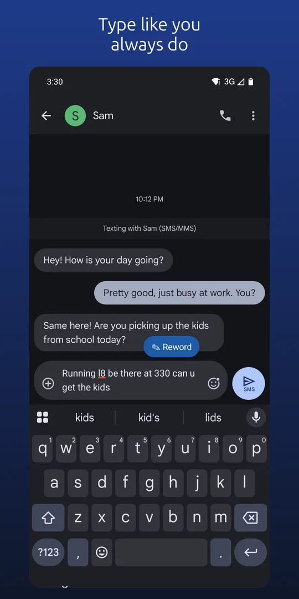
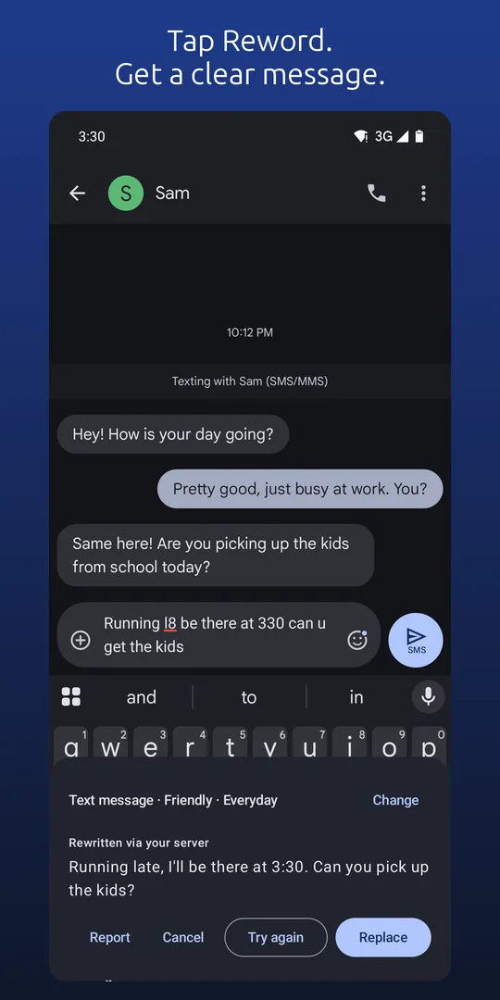
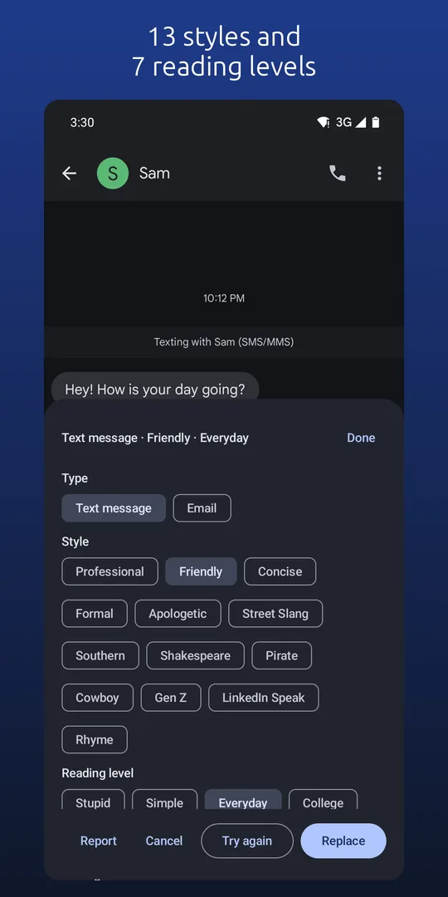
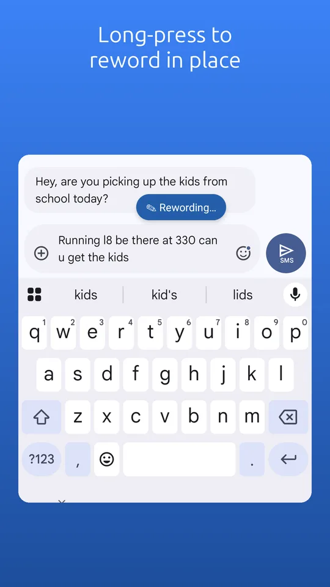
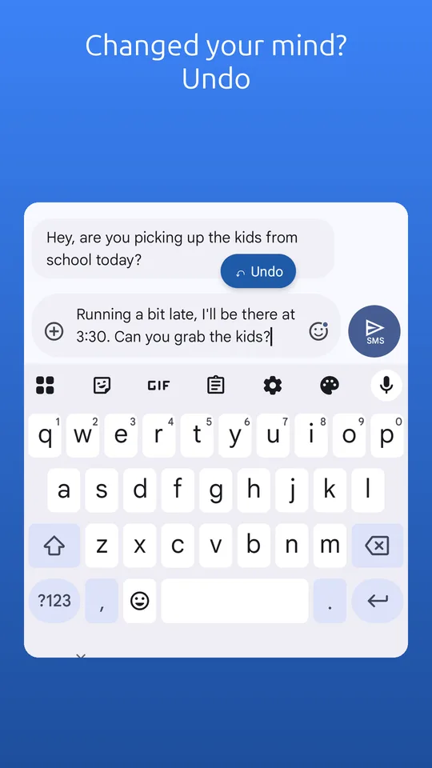
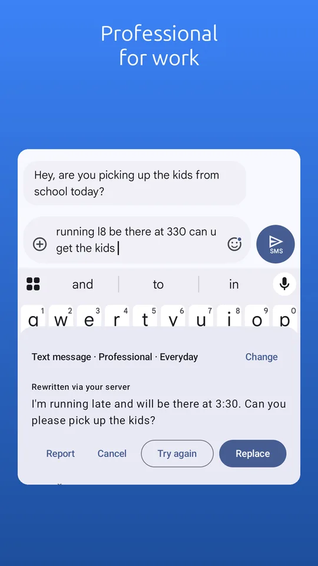
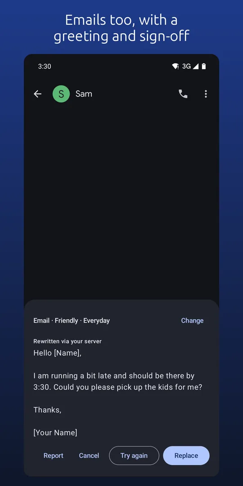
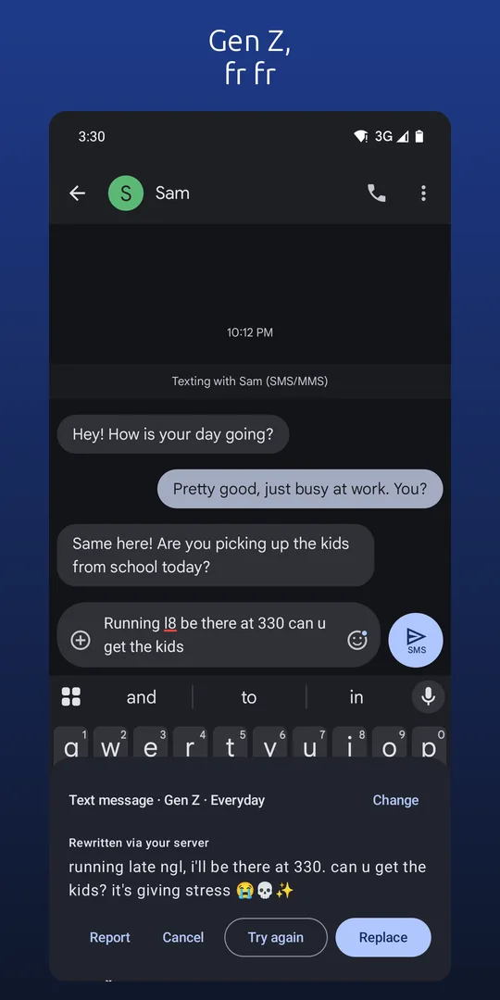
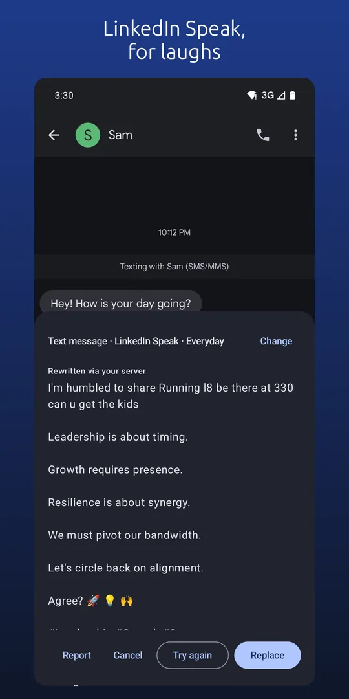
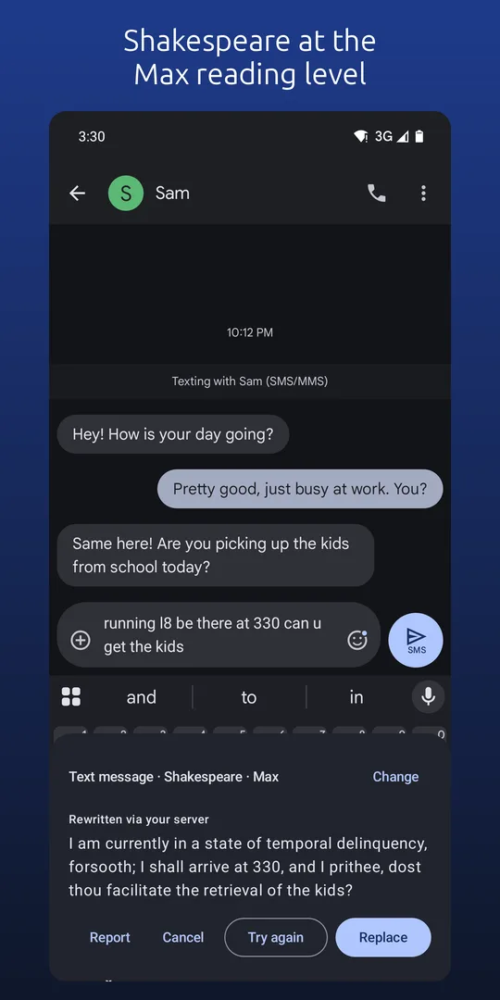
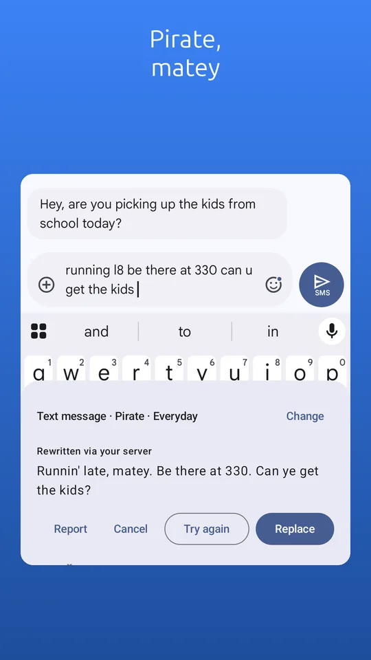
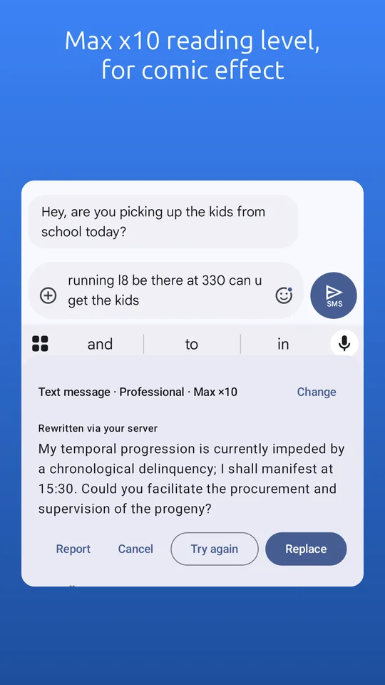
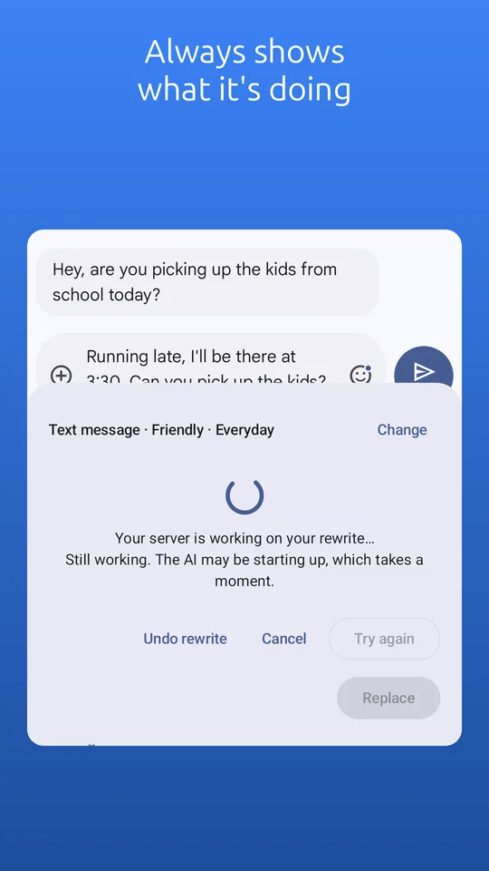
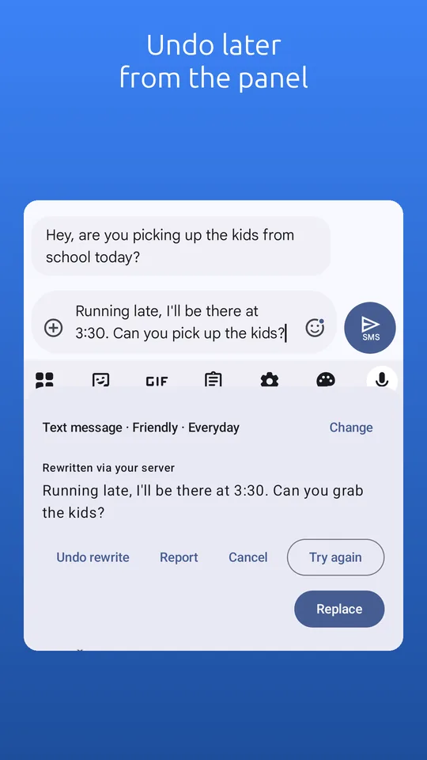
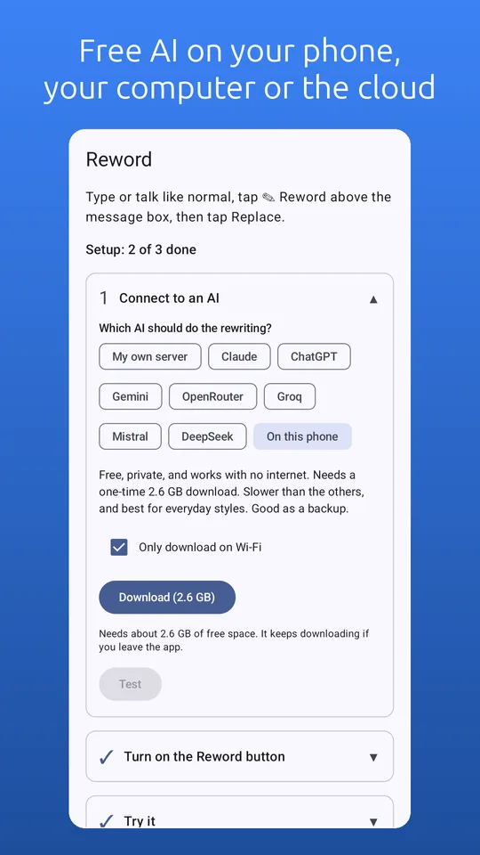
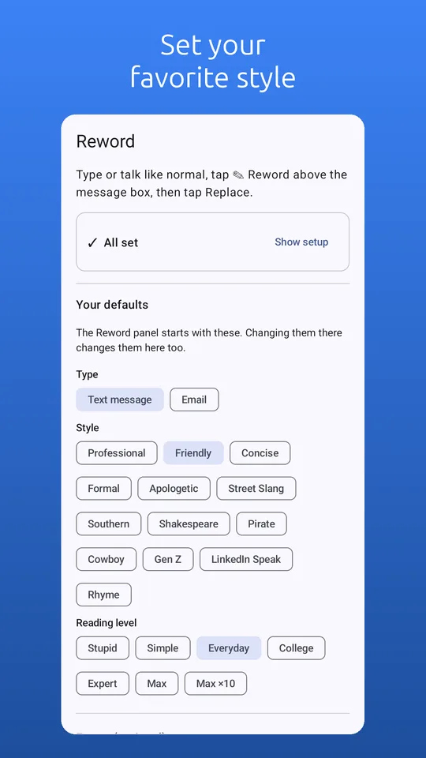
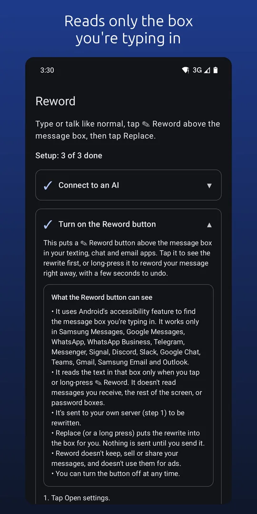


Works where you type
The Reword button appears in Samsung Messages, Google Messages, WhatsApp, WhatsApp Business, Telegram, Messenger, Signal, Discord, Slack, Google Chat, Teams, Gmail, Samsung Email and Outlook. In other apps, use the Reword keyboard, the Quick Settings tile, or select text and choose Reword.
Styles and reading levels
- 13 styles: Professional, Friendly, Concise, Formal, Apologetic, Street Slang, Southern, Shakespeare, Pirate, Cowboy, Gen Z, LinkedIn Speak and Rhyme.
- 7 reading levels: Simple, Everyday, College and Expert, plus Max, Max ×10 and Stupid for laughs.
- Text or email: short and natural for texts; greeting, paragraphs and sign-off for emails.
Your choice of AI
- On this phone: free, private and works offline after a one-time 2.6 GB download.
- Your own computer running Ollama, LM Studio or another compatible server.
- A cloud AI with your own API key: Claude, ChatGPT, Gemini, OpenRouter, Groq, Mistral or DeepSeek. Several have free tiers.
Private by design
- Nothing is sent until you tap Reword, and then only to the AI you chose.
- No account, no ads, no analytics.
- The Reword button reads only the message box you're typing in, only in the apps above, and never password boxes or messages you receive.
Read the full privacy policy.
Help and feedback
Questions, problems or a rewrite that came out wrong: email rewordmessages@gmail.com. You can also tap Report in the rewrite panel to send us a rewrite.